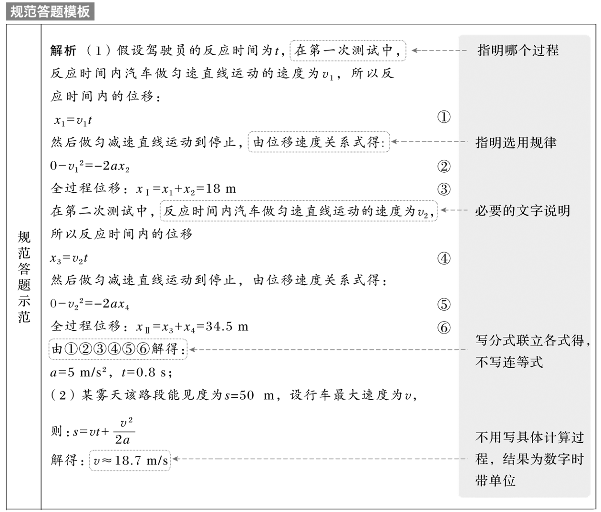
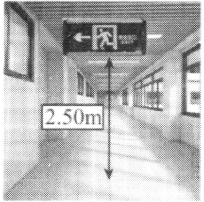

匀变速直线运动的的规律
匀变速直线运动的基本规律及应用
- 匀变速直线运动：沿着一条直线且加速度不变的运动。v-t 图线是一条倾斜的直线
- \bar{v}=v_{\frac{t}{2}}=\frac{v_{0}+v}{2}
- 公式整理：
- 少 x：v=v_0+at
- 少 a：x=\frac{(v+v_0)t}{2}
- 少 v (v_0)：x=v_0t+\frac{1}{2}at^2(x=vt-\frac{1}{2}at^2)
- 少 t：v^2-v_0^2=2ax
判断
- 匀变速直线运动是加速度均匀变化的直线运动( 错 )
- 匀加速直线运动的位移是均匀增加的( 错 )
- 匀变速直线运动中，经过相同的时间，速度变化量相同( 对 )
- 逆向思维法：对于末速度为零的匀减速运动，采用逆向思维法，可以看成反向的初速度为零的匀加速直线运动
- 图像法：借助 v-t 图像(斜率、面积)分析运动过程
例题
对某汽车刹车性能测试时，当汽车以 36 km/h 的速率行驶时，可以在 18 m 的距离被刹住；当以 54 km/h 的速率行驶时，可以在 34.5 m 的距离被刹住。假设两次测试中驾驶员的反应时间(驾驶员从看到障碍物到做出刹车动作的时间)与刹车的加速度都相同。问：
- 这位驾驶员的反应时间为多少；
- 某雾天，该路段能见度为 50 m，则行车速率不能超过多少？

- 必要的文字说明
- 指明研究对象、研究过程、所用规律定理，新出现的字母代表含义。
- 必要的方程
- 必须是原型公式，不变形；
- 不用连等式，分步列式，公式较多加编号①②③；
- 字母符号规范，与题干中一致。
- 合理的运算
- 联立方程、代入数据得，不用写出具体的运算过程；
- 结果为数字时带单位，不需要化成小数形式；矢量指明方向；多个解需讨论说明或取舍。
练习
中国科考船“科学”号对马里亚纳海沟南侧系列海山进行调查，船上搭载的“发现”号遥控无人潜水器完成了本航次第 10 次下潜作业，“发现”号下潜深度可达 6 000 m 以上。潜水器完成作业后上浮，上浮过程初期可看成匀加速直线运动.今测得潜水器相继经过两段距离为 8 m 的路程，第一段用时 4 s，第二段用时 2 s，则潜水器的加速度大小是 ( \frac{2}{3}m\; /s^{2} )
练习 (稍难)
一质点做匀加速直线运动，位移为 x_1 时，速度的变化量为 \Delta v；紧接着位移为 x_{2} 时，速度的变化量仍为 \Delta v.则质点的加速度为 ( \frac{(\Delta v)^{2}}{x_{2}-x_{1}} )
自由落体运动 竖直上抛运动
自由落体运动
- 运动特点：初速度为 0，加速度为 g 的匀加速直线运动
- 基本规律
- 速度与时间的关系式：v=gt
- 位移与时间的关系式：x=\frac{1}{2}gt^{2}
- 速度与位移的关系式：v^{2}=2gh
竖直上抛运动
- 运动特点：初速度方向竖直向上，加速度为 g，上升阶段做匀减速运动，下降阶段做自由落体运动
- 基本规律
- 速度与时间的关系式：v=v_{0}-gt
- 位移与时间的关系式：x=v_{0}t-\frac{1}{2}gt^{2}
练习 (估算)
高空坠物已经成为城市中仅次于交通肇事的伤人行为.某市曾出现一把明晃晃的菜刀从高空坠落，“砰”的一声砸中停在路边的一辆摩托车的前轮挡泥板的事件.假设该菜刀可以看成质点，且从 16 层楼的窗口无初速度坠落，则从菜刀坠落到砸中摩托车挡泥板的时间最接近 ( B )
A. 1 s B. 3 s C. 5 s D. 7 s
练习(估算)
课间，一些同学常在走廊上跳摸指示牌. 身高 1.70 m 的小兰同学在指示牌正下方原地竖直向上跳起，手指恰好能摸到指示牌的下边沿，测得指示牌下边沿到地面的竖直距离为 2.50 m (如图所示). 小兰同学双脚离地时速度大小最接近于( B )
A. 0.5 m/s B. 3 m/s C. 5 m/s D. 7 m/s

练习
气球以 1.25 m/s^{2} 的加速度从地面由静止开始竖直上升，离地 30 s 后，从气球上掉下一物体，不计空气阻力，g 取 10 m/s^{2}，则物体到达地面所需时间为 ( 15 s )
第一步：求物体从气球上掉下时的初速度和高度
根据匀加速直线运动公式，气球上升的最终速度 v 和位移 h 可以通过以下公式计算：
v = u + at
h = ut + \frac{1}{2}at^2
代入数值：
v = 0 + (1.25)(30) = 37.5 \, \text{m/s}
h = 0 + \frac{1}{2}(1.25)(30)^2 = 0.625 \times 900 = 562.5 \, \text{m}
因此，物体从气球上掉下时的初速度 v = 37.5 \, \text{m/s} （向上），高度 h = 562.5 \, \text{m}。
第二步：求物体到达地面所需的时间
物体下落时的初速度为 v = 37.5 \, \text{m/s} （向上），加速度为 -g = -10 \, \text{m/s}^2 。
物体到达地面的总位移是 -562.5 \, \text{m} （向下），我们可以使用位移公式：
s = vt + \frac{1}{2}at^2
代入已知条件：
-562.5 = (37.5)t - \frac{1}{2}(10)t^2
-562.5 = 37.5t - 5t^2
整理得到一个二次方程：
\begin{align} 5t^2 - 37.5t - 562.5 = 0 \\ t^2 - 7.5t - 112.5 = 0 \\ t=15s \end{align}
多过程问题
一般的解题步骤
- 准确选取研究对象，根据题意画出物体在各阶段运动的示意图，直观呈现物体运动的全过程；
- 明确物体在各阶段的运动性质，找出题目给定的已知量、待求未知量，设出中间量；
- 合理选择运动学公式，列出物体在各阶段的运动方程及物体各阶段间的关联方程。
练习
可爱的企鹅喜欢在冰面上玩游戏。如图所示，有一只企鹅在倾角为 37^\circ 的倾斜冰面上，先以加速度 a = 0.5 \, \text{m/s}^2 从冰面底部由静止开始沿直线向上“奔跑”，在 t = 8 \, \text{s} 时，突然卧倒，以肚皮贴着冰面向前滑行，最后退滑到出发点，完成一次游戏（企鹅在滑动过程中姿势保持不变）。若企鹅肚皮与冰面间的动摩擦因数 \mu = 0.25，已知 \sin 37^\circ = 0.6，\cos 37^\circ = 0.8，g = 10 \, \text{m/s}^2。求：
- 企鹅向上“奔跑”的位移大小；
- 企鹅在冰面滑动的加速度大小；
- 企鹅退滑到出发点时的速度大小。(计算结果可用根式表示)
1
x_{1}=\frac{1}{2}at^{2}=16\;m
2
上滑加速度 ma_{1}=mg\sin \theta + \mu mg\cos \theta \Rightarrow a_{1}=8\;m /s^{2}
下滑加速度 ma_{2}=mg\sin \theta - \mu mg\cos \theta \Rightarrow a_{2}=4\;m /s^{2}
3
第一步：求企鹅从卧倒到滑到最高点的位移
企鹅卧倒前的速度 v_{1}=at=4\;m /s^{2}
从卧倒到滑到最高点的位移 x' 满足 {v_{1}}^{2}=2a_{1}x'\Rightarrow x'=\frac{4^{2}}{2\times 8}\;m=1m
第二步：从最高点静止出发滑到出发点的速度
从最高点静止出发滑到出发点的位移 x_{2}=x_{1}+x'=17\;m
回到出发点的速度 v_{2} 满足 {v_{2}}^{2}=2a_{2}x_{2}\Rightarrow v_{2}=2\sqrt{ 34 }\;m /s